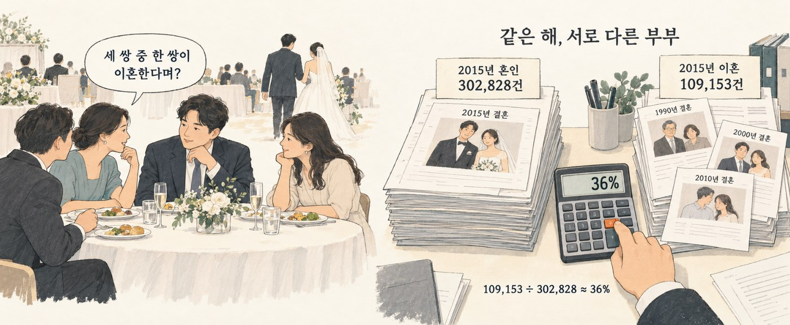
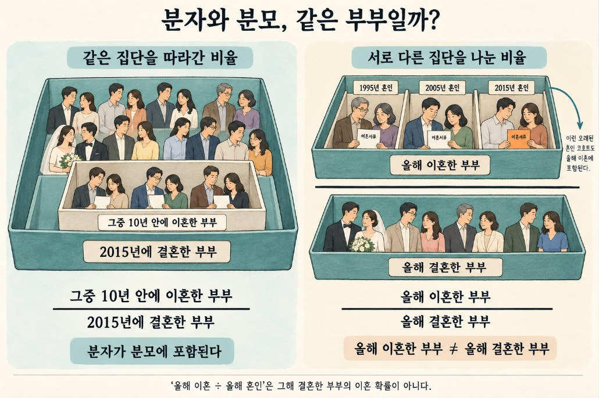
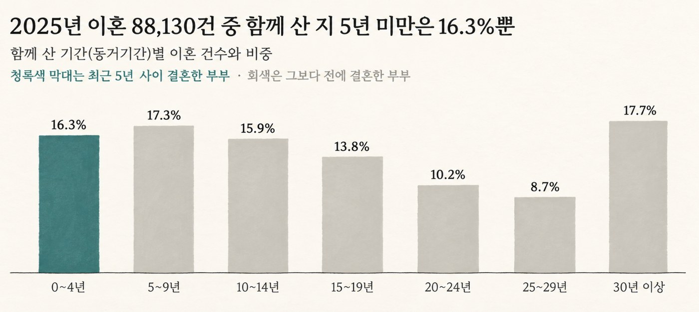
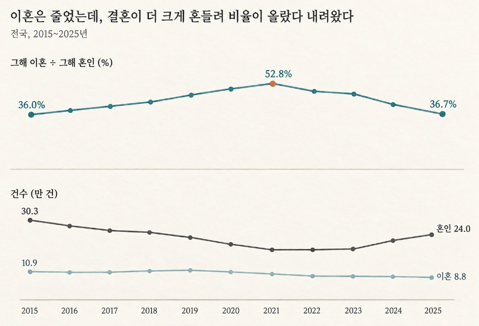

[그 숫자, 누가 셌어요? 2] "세 쌍 중 한 쌍이 이혼한다"는 계산법
올해 이혼 건수를 올해 혼인 건수로 나눈 숫자의 함정. 결혼한 해에 맞춰 다시 나누면 10년 안 이혼은 약 13%입니다.
그 숫자, 누가 셌어요? · 8편 중 3번째 글
연재 목차 보기
대표가 준비 중인 책 『그 숫자, 누가 셌어요?』의 원고를 연재합니다. 숫자는 모두 한국의 공개 자료를 내려받아 대표가 직접 다시 계산했습니다. 자료는 저장소에서 받을 수 있습니다.
청첩장을 돌리던 날, 친구들 단체 대화방에 기사 하나가 올라옵니다. 요즘 이혼이 얼마나 흔한지 숫자로 보여 주는 기사입니다. 다들 웃고 넘기지만 숫자는 마음 한쪽에 남습니다. 결혼한 부부 가운데 정말 그만큼이 헤어진다는 뜻일까요? 이혼율도 결국 어떤 숫자를 다른 숫자로 나눈 값입니다. 그 위와 아래에는 각각 누가 들어 있을까요?
결혼식장에서 듣는 말
토요일 점심, 예식장 뷔페의 둥근 탁자. 신랑·신부가 테이블을 돌며 인사를 하고 간 뒤, 누군가 반쯤 농담으로 말합니다.
"잘 살아야 할 텐데. 요즘은 세 쌍 중 한 쌍이 이혼한다며?"
아무도 반박하지 않습니다. 다들 어디선가 들어 본 숫자이기 때문입니다. 뉴스에서도, 친척 모임에서도. 더 센 버전으로 "두 쌍 중 한 쌍"이라는 말도 돌아다닙니다.
그런데 이 숫자는 누가, 어떻게 센 걸까요?
세 쌍 중 한 쌍은 결국 이혼한다?
이 말을 들으면 우리는 이렇게 알아듣습니다. 오늘 결혼한 부부 세 쌍을 오래 지켜보면, 그중 한 쌍은 언젠가 이혼한다.

물어볼 것도 없이 당연한 해석 같지만, 이 숫자를 만든 계산법을 보면 그렇게 읽을 수 없습니다.
실제로 결혼한 부부를 30년, 40년 동안 따라다니며 센 사람은 거의 없습니다. 대부분은 훨씬 간단한 방법으로 센 숫자입니다. 국가데이터처(옛 통계청)가 해마다 발표하는 두 숫자, 그해의 이혼 건수와 그해의 혼인 건수를 나눈 것이죠.
2015년에는 이혼 10만 9,153건, 혼인 30만 2,828건이었습니다. 나누면 36%, 정말 세 쌍 중 한 쌍입니다. 그럴듯해 보이는 숫자입니다.
세 쌍에서 두 쌍으로, 다시 세 쌍으로
같은 계산을 2015년부터 2025년까지 해마다 해 보았습니다.
숫자는 해마다 올랐습니다. 2019년 46.3%, 2020년 49.9%, 그리고 2021년에는 52.8%. 이 계산법대로라면 2021년에는 "두 쌍 중 한 쌍 이상이 이혼한다"고 말해야 합니다. 그러다 다시 내려와 2025년에는 36.7%, 처음과 거의 같은 "세 쌍 중 한 쌍"으로 돌아왔습니다.
6년 사이 부부들의 이혼이 그만큼 늘었다 줄었다면 이혼 건수에도 흔적이 남아야 합니다. 2020년 10만 6,500건이던 이혼은 2021년 10만 1,673건으로 줄었습니다. 이혼은 줄었는데 '이혼하는 부부의 비율'은 올랐습니다. 그러니 '이혼율 최고' 같은 제목을 보면, 이혼 건수가 실제로 늘었는지부터 확인해야 합니다.
11년 전체로 봐도 마찬가지입니다. 이혼 건수는 10만 9,153건에서 8만 8,130건으로 줄었습니다. 2018~2019년에 잠깐 늘었을 뿐입니다. 그런데도 이 계산법은 36%에서 53%까지 올랐다가 내려왔습니다.
오늘 이혼한 사람과 오늘 결혼한 사람은 다른 사람이다
숫자를 움직인 것은 나누는 쪽, 혼인 건수였습니다.
2015년 30만 2,828건이던 혼인은 2022년 19만 1,690건까지 줄었습니다. 장기간 줄어 오던 데다 코로나로 결혼식을 미룬 사람이 많았던 시기입니다. 이혼이 조금 줄어드는 동안 혼인은 3분의 1 넘게 줄었으니, 나눗셈의 결과는 올라갈 수밖에 없습니다.
학교에 비유해 보죠. 어느 학교에서 해마다 전학 가는 학생이 30명입니다. 올해 입학생이 100명이면 "전학률 30%", 내년 입학생이 60명으로 줄면 "전학률 50%"가 됩니다. 전학 가는 학생은 한 명도 늘지 않았는데요. 더 이상한 건, 전학 간 30명 대부분이 올해 입학생이 아니라 2학년, 3학년이라는 점입니다.
이혼도 같습니다. 2025년에 이혼한 8만 8,130쌍 가운데 함께 산 지 5년이 안 된 부부는 16.3%뿐입니다. 20년 넘게 함께 산 부부가 36.6%로 훨씬 많고, 30년을 넘긴 부부도 17.7%나 됩니다. 이 부부들은 1990년대나 그 전에 결혼한 사람들입니다.
그러니 "올해 이혼 ÷ 올해 혼인"은 30년 전에 결혼한 사람들의 이혼을 올해 결혼한 사람 수로 나눈 값입니다. 세대가 다른 두 무리를 나눈 것이니, 그 결과는 "결혼한 부부 중 몇 쌍이 이혼하나"라는 질문에 답하지 못합니다. 결혼을 앞둔 부부가 '세 쌍 중 한 쌍'을 자기 이야기로 받아들일 근거는 이 계산에 없습니다.
알아두면 좋은 통계 · 비율의 분자와 분모
비율은 한 숫자를 다른 숫자로 나눈 값입니다. 나눠지는 위쪽 숫자를 '분자', 나누는 아래쪽 숫자를 '분모'라고 합니다. 어떤 비율이 의미가 있는지 제대로 확인하려면 다음 두 가지를 따져봐야 합니다.

첫째, 분자에 든 사람이 분모에도 그대로 들어 있는가?
예를 들어 "2015년에 결혼한 30만 2,828쌍 중, 그 부부들 가운데 10년 안에 이혼한 쌍"을 계산할 때는 분자(이혼한 부부)가 분모(2015년 결혼한 부부) 집단 안에 온전히 포함됩니다. 이런 비율은 "결혼한 부부 중 몇 %가 실제로 이혼하는가"라는 원래의 질문에 정확히 답해 줍니다.
둘째, 분자와 분모가 서로 전혀 다른 사람들을 가리키고 있지는 않은가?
반면 "올해 이혼 ÷ 올해 혼인"은 분자(올해 이혼한 다양한 연차의 부부들)의 대다수가 분모(올해 막 결혼한 부부) 밖에 존재합니다. 서로 다른 시대를 살거나 다른 결혼 연차인 사람들을 억지로 나눈 셈입니다. 그림 2-3은 그 분자의 상자 안에 실제로 어떤 사람들이 들어 있는지 속을 시원하게 열어 보여 줍니다.

같은 해에 결혼한 사람들처럼, 같은 출발점을 가진 무리를 통계에서는 '코호트'라고 부릅니다. "결혼한 부부 중 몇 %가 이혼하나"를 제대로 재려면 코호트를 오랜 기간 따라가며 세어야 합니다.
참고로 국가데이터처가 공식으로 사용하는 지표는 '조이혼율', 즉 인구 1,000명당 이혼 건수입니다. 2025년 기준으로는 1.7건이었습니다. 분모가 전체 인구이다 보니 한 해 결혼 건수가 출렁여도 크게 흔들리지 않는다는 장점이 있습니다. 하지만 결혼하지 않은 사람과 어린아이까지 분모에 포함되기 때문에, "결혼한 부부 중 몇 %가 헤어지는가"라는 질문에는 역시 직접적인 답이 되지 못합니다.
11년 치 통계로 다시 세어 봤다
국가통계포털에서 2015~2025년 연도별 혼인 건수와, 함께 산 기간별 이혼 건수 데이터를 내려받았습니다. 먼저 기존의 단순 계산 비율과 두 건수를 나란히 비교해 보았습니다(그림 2-4).

그림 2-4의 아래쪽을 보면 이혼 건수 선은 거의 평평하게 완만히 내려갑니다. 결국 위쪽의 비율 선을 크게 흔들고 위로 끌어올린 주범은 이혼이 아니라 '혼인 선'이었습니다. 혼인 건수가 바닥을 찍은 2021~2022년에 이혼 비율이 꼭대기를 찍었고, 이후 혼인이 다시 늘어나자 비율도 함께 내려왔습니다.
결혼한 해에 맞춰 다시 나누기
제대로 이혼율을 재려면 분자와 분모를 실제 같은 사람들로 맞추어야 합니다. 예를 들어 2025년에 함께 산 지 0~4년 만에 이혼한 부부는 대부분 2021~2025년 사이에 결혼한 사람들입니다. 따라서 이들의 비율을 구할 때는 해당 5년 동안의 평균 혼인 건수로 나누어야 정확합니다.
(2025년 동거 0~4년 이혼 14,392건) ÷ (2021~2025년 평균 혼인 208,118건) ≈ 6.9%
5~9년 차 구간도 같은 방법으로, 2016~2020년의 평균 혼인 건수로 나눕니다. 이 값들을 더하면 '결혼 10년 안에 실제로 이혼하는 비율'이 비로소 정확하게 나옵니다.
| 함께 산 기간 | 2024년 기준 | 2025년 기준 |
|---|---|---|
| 0~4년 | 7.5% | 6.9% |
5~9년 6.1% 6.1%
10년 안에 이혼 13.6% 13.0%
결혼 10년 안에 이혼하는 부부는 약 13%, 즉 여덟 쌍 중 한 쌍입니다. 심지어 0~4년 차 이혼 비율은 해마다 줄어들고 있어서 2019년 8.7%에서 2025년 6.9%로 낮아졌습니다.
물론 이 계산에는 두 가지 가정이 들어 있습니다. 첫째, 5년 묶음 구간 안에서는 해마다 이혼할 가능성이 비슷하다고 보았습니다. 둘째, 통계표의 동거 기간은 혼인신고일이 아니라 실제로 함께 살기 시작한 시점 기준이지만, 이를 결혼한 해와 같다고 놓았습니다. (혼인 건수 데이터에 재혼이 일부 포함되어 있기도 합니다.)
따라서 이 숫자는 대략적인 크기를 가늠하는 추정치입니다. 그럼에도 "세 쌍 중 한 쌍"과 "두 쌍 중 한 쌍" 사이를 어지럽게 오가는 과장된 숫자보다는 실제 질문에 훨씬 더 정확하게 답해 줍니다.
다만 저는 10년 차까지만 셌다는 점에 유의해야 합니다. 2025년 이혼 건수의 66.4%는 함께 산 지 10년이 넘은 부부였습니다. 그 이후의 이혼까지 모두 세려면 1990년대 혼인 건수 데이터까지 끌어와야 합니다. 즉, 평생 동안 이혼할 확률은 13%보다는 훨씬 높을 것입니다. 그러니 이혼 통계를 볼 때는 항상 '몇 년 안에'라는 기간 기준이 붙어 있는지부터 확인해야 합니다. 기간 조건이 다른 두 이혼율은 서로 간단히 비교할 수 없습니다.
이혼은 줄었다? 절반만 맞다
여기까지 읽고 나면 이렇게 말하고 싶어집니다.
"걱정할 것 없다. 이혼은 줄어들고 있구나."
전체 이혼 건수만 보면 분명 맞는 말입니다. 하지만 함께 산 기간별로 나누어 보면, 서로 완전히 반대 방향으로 움직이는 두 무리가 눈에 들어옵니다.
| 함께 산 기간 | 2015년 이혼 | 2025년 이혼 | 변화 |
|---|---|---|---|
| 5년 미만(0~4년) | 2만 4,666건 | 1만 4,392건 | 42% 감소 |
30년 이상 1만 431건 1만 5,628건 50% 증가
전체 10만 9,153건 8만 8,130건 19% 감소
신혼부부의 이혼은 거의 절반으로 줄었고, 30년 넘게 함께 산 부부의 이혼은 절반 넘게 늘었습니다. 뉴스라면 여기서 "황혼 이혼이 급증한다"는 눈길을 끄는 제목이 나올 법합니다.
하지만 이 장에서 배운 원리를 여기에도 그대로 적용해야 합니다. 나눌 수(분모)는 과연 무엇인가?
신혼부부 쪽은 비교적 쉽게 확인할 수 있습니다. 최근의 결혼 건수 데이터가 분명히 존재하기 때문입니다. 앞서 5절에서 살펴본 것처럼 실제 결혼 건수 대비 비율로 보아도 2019년 8.7%에서 2025년 6.9%로 줄었습니다. 단순히 전체 결혼이 줄어든 탓만은 아니라는 뜻입니다.
반면 30년이 넘은 부부 쪽은 상황이 다릅니다. 이 부부들의 분모는 '지금 결혼 30년을 넘기고 함께 살고 있는 부부가 전체 통계에서 몇 쌍인가'입니다. 1990년대 전후에는 지금보다 훨씬 많은 부부가 결혼했고, 그 많은 인구 집단이 세월이 흘러 해마다 '결혼 30년 차'에 진입하고 있습니다. 그렇다면 이혼할 수 있는 사람(기초 인구) 자체가 늘어나고 있을 가능성이 큽니다. 그러므로 통계상 이혼 건수가 50% 증가한 것이 사람들의 '마음이 변해서'인지, 아니면 애초에 대상 '사람이 늘어서'인지는 이 단순한 자료만으로는 알 수 없습니다.
저는 여기서 멈추기로 했습니다. 분모가 정확히 무엇인지 모르는 상태에서 비율만 보고 성급히 결론을 내리면, 이 장의 앞부분에서 신랄하게 비판했던 '세 쌍 중 한 쌍'이라는 착각과 똑같은 실수를 반복하게 되기 때문입니다. "이혼이 전반적으로 줄었다"는 한 문장 속에는 사실 서로 완전히 다른 두 가지 이야기가 복잡하게 섞여 있습니다.
누구를 셌나?
결혼식장 뷔페에서 누군가 "요즘은 세 쌍 중 한 쌍이 이혼한다며?"라고 말할 때, 이제 우리는 그 허점을 짚어낼 수 있습니다.
그 숫자는 '올해 이혼한 사람'을 '올해 결혼한 사람'의 수로 무작정 나눈 값일 뿐이며, 결혼 건수가 줄어들면 실제 이혼이 줄어들더라도 비율 자체는 오히려 커진다는 사실을요. 결혼한 연도를 정확히 맞춰서 다시 계산해 보면, 결혼 후 10년 안에 실제로 이혼하는 부부는 여덟 쌍 중 한 쌍 정도입니다.
그렇다고 해서 "평생 살면서 여덟 쌍 중 한 쌍이 헤어진다"고 단정해서는 안 됩니다. 저는 어디까지나 10년 차까지만 세었을 뿐이며, 전체 이혼의 3분의 2는 그 이후에 일어납니다. 평생을 통틀은 이혼 확률은 이보다 훨씬 높을 것입니다. 그 진짜 숫자를 알기 위해서는 같은 해에 결혼한 사람들의 무리를 끝까지 따라가며 추적해야 합니다.
"올해 이혼 ÷ 올해 결혼"이라는 엉뚱한 나눗셈으로는 결코 답이 나오지 않습니다.
앞으로 어떤 통계 비율을 보든 다음 세 가지 질문을 던져보세요.
이 비율에서 나누어지는 사람과 나누는 사람은 실은 같은 사람들인가?
위쪽 숫자에 들어 있는 사람이 아래쪽 숫자에도 온전히 포함되어 있는가?
아래쪽 숫자(분모)가 외부 요인으로 흔들릴 때 비율까지 덩달아 왜곡되지는 않는가?
마치며
주변에서 "요즘은 세 쌍 중 한 쌍이 헤어진다더라"라는 말을 들으면, 그 숫자는 올해 이혼한 부부를 올해 결혼한 부부 수로 단순히 나눈 허수일 가능성이 큽니다. 실제로 2021년에는 같은 계산법이 52.8%까지 올랐지만, 그해의 실제 이혼 건수는 전년보다 오히려 줄어들었습니다.
이러한 착시는 회사 업무에서도 똑같이 일어납니다. 예를 들어 '이번 달 해지 고객 수'를 '이번 달 신규 가입자 수'로 나누어 지표를 관리한다면, 마케팅 부진으로 신규 가입이 크게 줄어든 달에는 실제 해지 고객이 늘어나지 않았어도 해지율이 크게 오른 것처럼 나타납니다.
통계의 분모와 분자가 무엇을 가리키는지 살펴보는 일은, 일상과 비즈니스 모두에서 오해를 피하는 가장 확실한 방패입니다.
직접 확인해 보기
파일: github.com/einfollab/basic_statics ▸ 2.혼인_이혼건수 ▸ 혼인 건수 CSV, 동거기간별 이혼 CSV
챗GPT에게 이렇게 물어보세요
파일을 올린 뒤 아래 문장을 하나씩 붙여 넣으면 됩니다.
두 파일 모두 맨 위 두 줄이 제목이야(첫 줄 연도, 둘째 줄 항목). 두 파일을 연도 기준으로 합쳐 줘. 연도별로 '이혼 건수 ÷ 혼인 건수' 비율을 계산하고, 비율과 두 건수를 한 그래프에 그려 줘. 비율이 움직인 이유가 분자 때문인지 분모 때문인지 설명해 줘.
동거기간 0~4년 이혼 건수를 그해부터 4년 전까지 5년의 평균 혼인 건수로 나눠서, 결혼 5년 안에 이혼하는 비율을 연도별로 추정해 줘. 5~9년도 같은 방법으로 계산해서 더해 줘. 이 방법이 코호트(같은 해에 결혼한 무리)를 직접 따라가는 방법과 어떻게 다른지, 어떤 가정이 들어가는지도 설명해 줘.
확인할 것
이 숫자가 나오면 맞습니다. 2025년 '이혼 ÷ 혼인'은 약 36.7%, 결혼 10년 안에 이혼하는 비율 추정은 약 13%입니다.
더 많은 질문과 파일 설명은 저장소 폴더의 README에서 볼 수 있습니다.
자료 출처
국가데이터처, 국가통계포털(KOSIS) 「시도별 혼인건수」, 「시도별 동거기간별 이혼」 2015~2025년.
국가데이터처 「2025년 혼인·이혼 통계」(2026.3.19): KDI 경제정보센터 자료 페이지